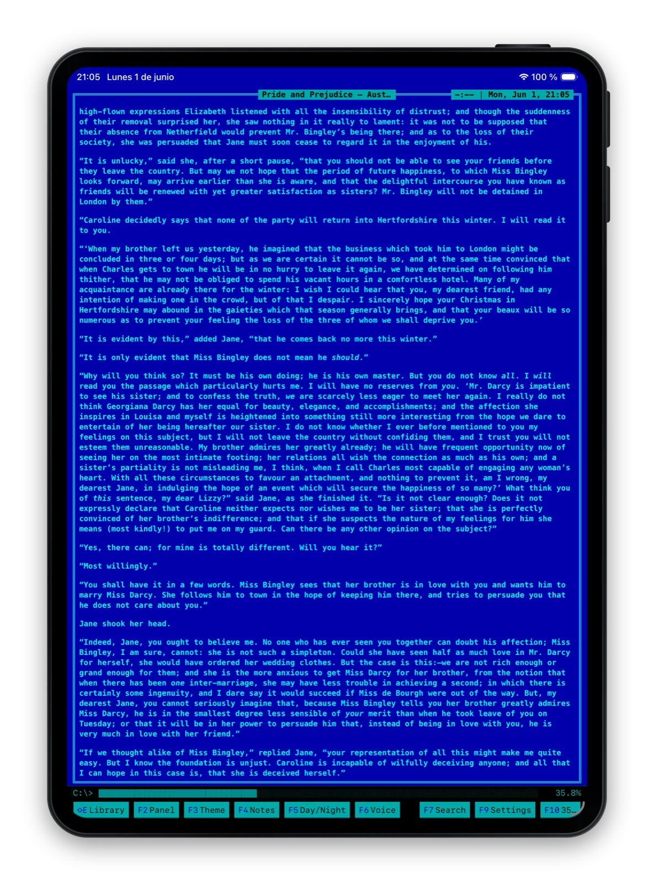
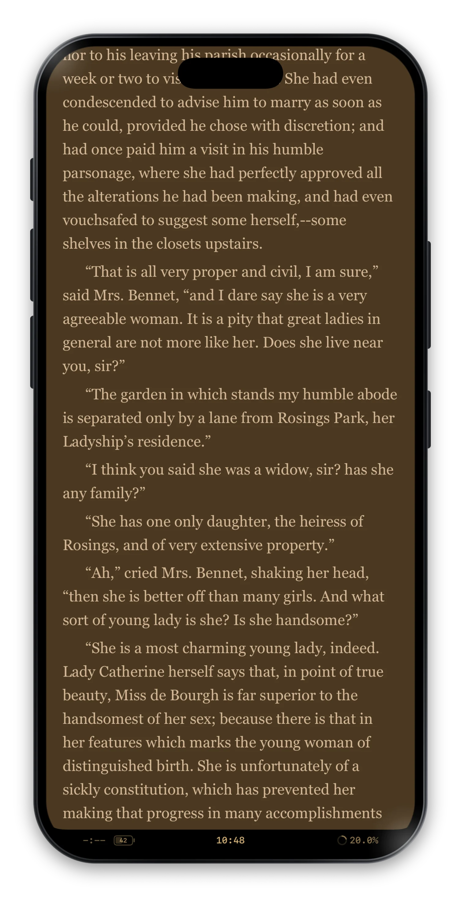

Continuous
Across your devices.
Your place in the book travels with you, down to the paragraph you left off on. Other apps drop you at the top of a chapter; this one remembers the line your eye was actually on.
What syncs: your position, your bookmarks, your notes, your library. What doesn't: the way each device is set up to read.
Mac

A chair. Two-page spread, 32 pt serif.
iPad

One page, comfortable size, sometimes Norton.
iPhone

Scroll mode, dark theme, small text, one hand.
Every screen has a setup that suits it — scroll, paged, or a two-page spread, whatever fits the moment. ContinuousReader remembers each one separately and keeps only the reading in sync.